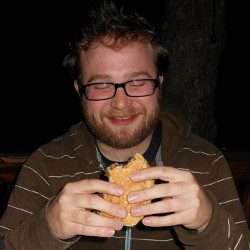

When it comes to patriotism, Ardian does it best. Some say if you listen very closely at night, you can hear the angelic voice of Ardian sing the national anthem every night before he goes to sleep. When it comes to hobbies, Ardian has three: Busch Light, The Second Amendment, and Chevrolet trucks. 'Murica.
A.J. Wohlfert

A.J. loves burgers! Man he loves those burgers. When he isn't chompin down on two buns, he's thinking about his next burger fix. If you are out eating burgers with A.J. make sure you watch your food as burgers have been known to disappear. He suspects that he may have been the Hamburglar in a previous life and his friends agree. He has some sticky fingers when it comes to burgers.
Brandon Feinstein
Brandon has two interests and two interests only; shuffling HTML elements and listening to songs about shuffling. Some of his favorites include 'Everyday I'm Shufflin', 'Shuffle Me Tender', and the timeless classic 'Twist and Shuffle'. When it comes to shuffling, Brandon has only one thing to say: "Shufflin' ain't easy."
Dan Schwartz
When Dan isn't kissing statues, he spends most of his time either coding, thinking about coding, or wishing he was coding. This riveting lifestyle has lead to an explosion in brain power; doctors say his head will grow three sizes by the New Year.